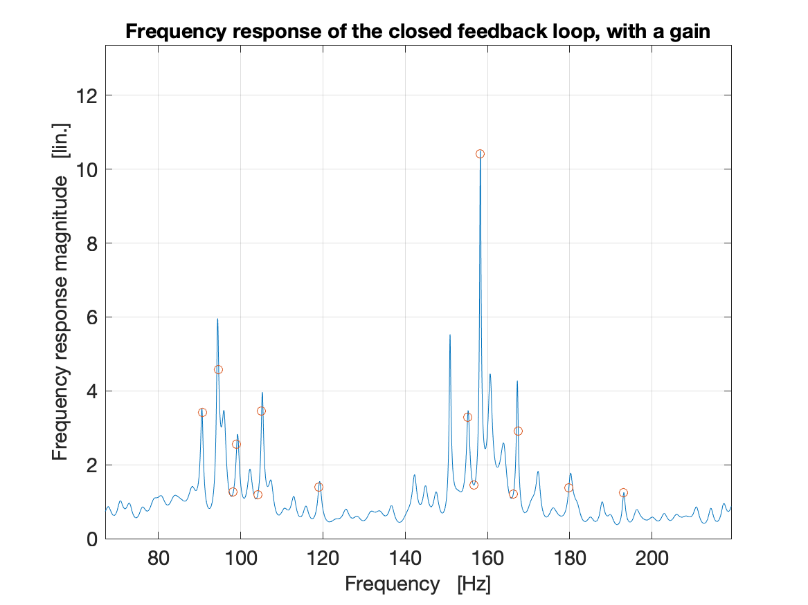
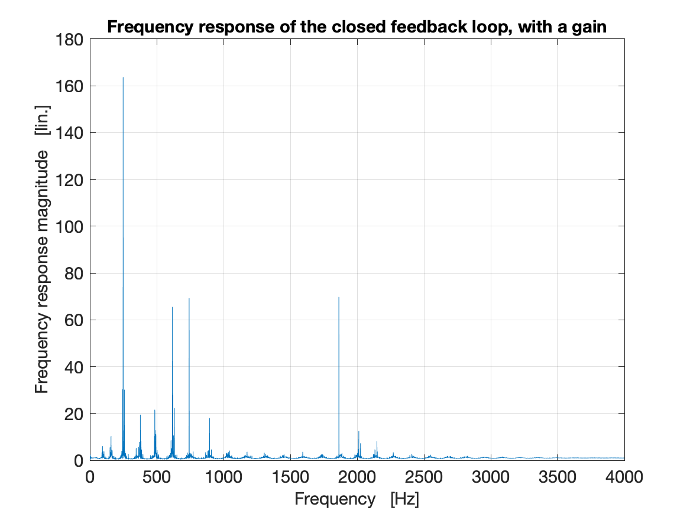

Frequency_and_phase
With the help of NTNU colleague Peter Svensson from the Acoustics group at the Department of Electronic Systems, we analyzed the frequency and phase response of the audio system without the plate. The conclusion is … that this is complex, but we have some insights. We can see some peaks in the frequency response, that on first sight might look to be harmonically related. On closer inspection, they are not exactly at harmonic, but close. An interesting insight I learned from Peter is also that the phase response of the system crucially determines the feedback potential. It is obvious when you know, but I must admit I had not thought of it before. So, to enable feedback to be amplified on each iteration through the signal chain we must have a phase response which is a multiple of 360 degrees in addition to a peak in the frequency response. Let’s say for example, if the phase is inverted (180 degrees), that frequency will not resonate as it effectively cancel itself out. This interestingly enough creates additional potential resonance frequencies at frequencies where we might not intuitively expect them. See the close-up plot of the frequency response, with red circles indicating frequencies that will have a phase response that is an exact multiple of 360.

Here is the full frequency plot for reference: 
And here is a PDF with further analysis from Peter
We still are not sure why I can get “pitch bends” with increasing pressure in the video (no plate) from 26. October.